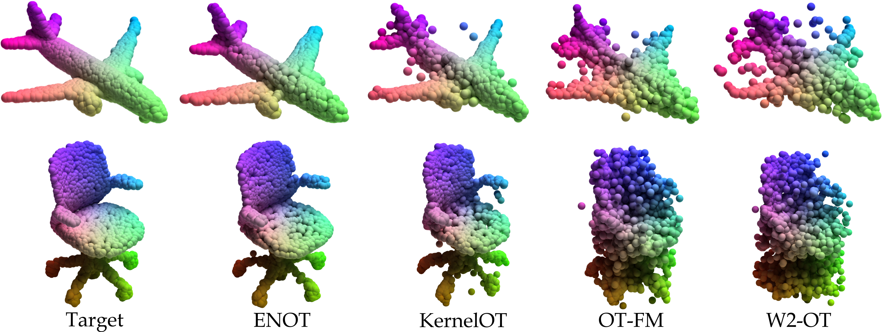
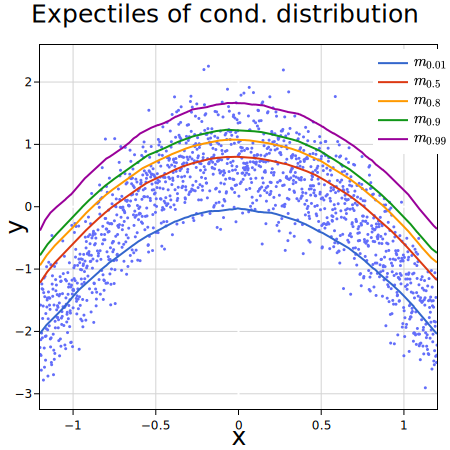
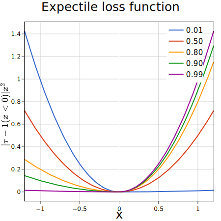
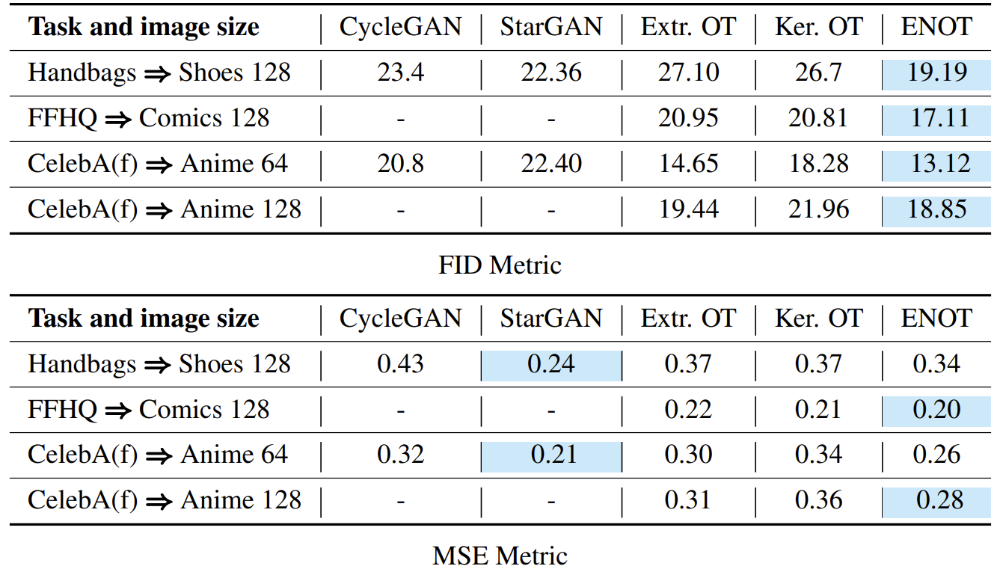
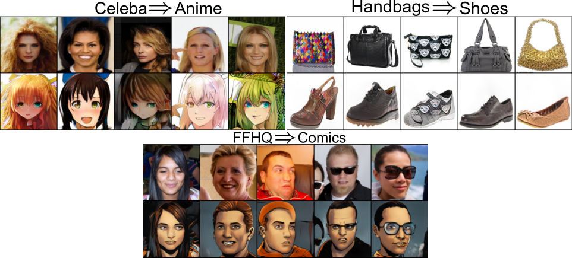

🦝ENOT :
Expectile Regularization for Fast and Accurate Training
of Neural Optimal
Transport
NeurIPS 2024 Spotlight
AIRI
Skoltech, AIRI
Skoltech, AIRI
*Indicates Equal Contribution
TL;DR
By introducing new expectile regularization on conjugate potential in the Neural Optimal Transport (NOT) optimization process, our new method, ENOT, outperforms both existing NOT solvers and GANs in different generative tasksm, while also being up to 10 times faster. Our method is integrated into popular OTT-JAX library and whole implementation consists of just single file.
Abstract
We present a new approach for Neural Optimal Transport (NOT) training procedure, capable of accurately and efficiently estimating optimal transportation plan via specific regularization on dual Kantorovich potentials. The main bottleneck of existing NOT solvers is associated with the procedure of finding a near-exact approximation of the conjugate operator (i.e., the c-transform), which is done either by optimizing over non-convex max-min objectives or by the computationally intensive fine-tuning of the initial approximated prediction. We resolve both issues by proposing a new, theoretically justified loss in the form of expectile regularisation which enforces binding conditions on the learning process of dual potentials. Such a regularization provides the upper bound estimation over the distribution of possible conjugate potentials and makes the learning stable, completely eliminating the need for additional extensive fine-tuning. Proposed method, called Expectile-Regularised Neural Optimal Transport (ENOT), outperforms previous state-of-the-art approaches on the established Wasserstein-2 benchmark tasks by a large margin (up to a 3-fold improvement in quality and up to a 10-fold improvement in runtime). Moreover, we showcase performance of ENOT for varying cost functions on different tasks such as image generation, showing robustness of proposed algorithm.
Generation from ShapeNet Planes
\(T_{\#} \mu \)

- Examples of plane generations from ShapeNet. Given source distribution \(\mu\) (standard Gaussian) and the goal is to pushforward \(T_{\#} \mu \) towards target by finding optimal transport plan \(T\).
- We compare ENOT with following algorithms: Optimal Transport Flow-Matching (OT-CFM), W2-OT, Kernel OT
- ENOT obtains best sample quality amongst baselines while also being up \(\times 3\text{-}10\) faster. Moreover, number of iterations upon convergence is significantly smaller.
Target
ENOT
KernelOT
OT-FM
W2-OT
Expectile Regularization


Expectiles are another way to capture statistics of some random variable \(X\). More formally, expectile \(\tau \in (0, 1)\) of r.v \(X\) is a solution to the assymetric least squares problem, defined as: $$ \begin{aligned} \arg \min _{m_{\tau}} \{\mathbb{E}\left[\mathcal{L}^{\tau}_2 (x - m_{\tau})\right]\} \\ \mathcal{L}^{\tau}_2 (u) = |\tau - \mathbb{1}(u < 0)|u^2 \end{aligned} $$ Intuitively, for low-valued expectiles, the model is penalized more for underestimation, while for large values - for overestimation, as shown on the right graph.
By penalizing overly optimistic conjugate Kantorovich potential during optimization, expectile regularization enforces "closeness" between true conjugate and approximated by neural network.
Experiments (Image-to-Image)

- Comparison of ENOT to baseline methods for Image-to-Image translation. We compare ENOT against 1) GAN based approaches: CycleGAN and StarGAN and 2) Recent Neural OT approaches: ExtremalOT and KernelOT. We compare resulting images based on Frechet Inception Distance (FID) and Mean Squared Error (MSE). Empty cells indicate that original authors of particular method did not include results for those tasks.

- Image sizes are 128x128, the 1st row contains the source images, the 2nd row contains predicted generative mapping by ENOT; Cost function: \(\mathcal{L}^2\) divided by the image size.
BibTeX
@article{buzun2024enotexpectileregularizationfast,
title={ENOT: Expectile Regularization for Fast and Accurate Training of Neural Optimal Transport},
author={Nazar Buzun and Maksim Bobrin and Dmitry V. Dylov},
journal={Advances in Neural Information Processing Systems},
year={2024}
}
The website template was borrowed from Michaël Gharbi and Jon Barron.